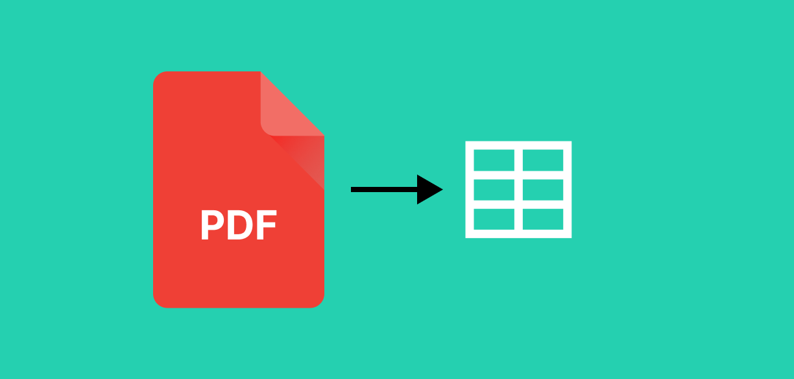

I think this one will speak directly to the heart of everyone working with/in Data: You know how PDF files can be at the same time your salvation or your doom? Sometimes, you’ll find the exact piece of information you needed in a PDF on the far reaches of the wide web. On the other hand, a PDF file can also leave you hanging when you needed it the most when you simply cannot convert one table within a PDF file into an usable format fast enough.

In this post, you’ll see how to scrape data effectively and swiftly from a PDF with and without tables.
Simple(r) text
As a first try you almost never need to deploy the biggest and more comprehensive tool; maybe the simpler and quicker method is the one that gets the job done, right? So why don’t start with a couple of simple yet very effective methods.
1. For digital files with straightforward text - pdf_text() from pdftools
When your PDF file contains entirely (or mostly) flowing text, it’s easier to begin with
Warning: package 'pdftools' was built under R version 4.3.2
Using poppler version 23.08.0
Code
download.file("http://arxiv.org/pdf/1403.2805.pdf", "1403.2805.pdf", mode ="wb")txt<-pdf_text("1403.2805.pdf")# first page textcat(txt[1])
The jsonlite Package: A Practical and Consistent Mapping
Between JSON Data and R Objects
Jeroen Ooms
arXiv:1403.2805v1 [stat.CO] 12 Mar 2014
UCLA Department of Statistics
Abstract
A naive realization of JSON data in R maps JSON arrays to an unnamed list, and JSON objects to a
named list. However, in practice a list is an awkward, inefficient type to store and manipulate data.
Most statistical applications work with (homogeneous) vectors, matrices or data frames. Therefore JSON
packages in R typically define certain special cases of JSON structures which map to simpler R types.
Currently there exist no formal guidelines, or even consensus between implementations on how R data
should be represented in JSON. Furthermore, upon closer inspection, even the most basic data structures
in R actually do not perfectly map to their JSON counterparts and leave some ambiguity for edge cases.
These problems have resulted in different behavior between implementations and can lead to unexpected
output. This paper explicitly describes a mapping between R classes and JSON data, highlights potential
problems, and proposes conventions that generalize the mapping to cover all common structures. We
emphasize the importance of type consistency when using JSON to exchange dynamic data, and illustrate
using examples and anecdotes. The jsonlite R package is used throughout the paper as a reference
implementation.
1 Introduction
JavaScript Object Notation (JSON) is a text format for the serialization of structured data (Crockford, 2006a).
It is derived from the object literals of JavaScript, as defined in the ECMAScript Programming Language
Standard, Third Edition (ECMA, 1999). Design of JSON is simple and concise in comparison with other
text based formats, and it was originally proposed by Douglas Crockford as a “fat-free alternative to XML”
(Crockford, 2006b). The syntax is easy for humans to read and write, easy for machines to parse and generate
and completely described in a single page at http://www.json.org. The character encoding of JSON text
is always Unicode, using UTF-8 by default (Crockford, 2006a), making it naturally compatible with non-
latin alphabets. Over the past years, JSON has become hugely popular on the internet as a general purpose
data interchange format. High quality parsing libraries are available for almost any programming language,
making it easy to implement systems and applications that exchange data over the network using JSON. For
R (R Core Team, 2013), several packages that assist the user in generating, parsing and validating JSON
are available through CRAN, including rjson (Couture-Beil, 2013), RJSONIO (Lang, 2013), and jsonlite
(Ooms et al., 2014).
The emphasis of this paper is not on discussing the JSON format or any particular implementation for using
1
JSON with R. We refer to Nolan and Temple Lang (2014) for a comprehensive introduction, or one of the
many tutorials available on the web. Instead we take a high level view and discuss how R data structures are
most naturally represented in JSON. This is not a trivial problem, particulary for complex or relational data
as they frequently appear in statistical applications. Several R packages implement toJSON and fromJSON
functions which directly convert R objects into JSON and vice versa. However, the exact mapping between
the various R data classes JSON structures is not self evident. Currently, there are no formal guidelines,
or even consensus between implementations on how R data should be represented in JSON. Furthermore,
upon closer inspection, even the most basic data structures in R actually do not perfectly map to their
JSON counterparts, and leave some ambiguity for edge cases. These problems have resulted in different
behavior between implementations, and can lead to unexpected output for certain special cases. To further
complicate things, best practices of representing data in JSON have been established outside the R community.
Incorporating these conventions where possible is important to maximize interoperability.
1.1 Parsing and type safety
The JSON format specifies 4 primitive types (string, number, boolean, null) and two universal structures:
• A JSON object : an unordered collection of zero or more name/value pairs, where a name is a string and
a value is a string, number, boolean, null, object, or array.
• A JSON array: an ordered sequence of zero or more values.
Both these structures are heterogeneous; i.e. they are allowed to contain elements of different types. There-
fore, the native R realization of these structures is a named list for JSON objects, and unnamed list for
JSON arrays. However, in practice a list is an awkward, inefficient type to store and manipulate data in R.
Most statistical applications work with (homogeneous) vectors, matrices or data frames. In order to give
these data structures a JSON representation, we can define certain special cases of JSON structures which get
parsed into other, more specific R types. For example, one convention which all current implementations
have in common is that a homogeneous array of primitives gets parsed into an atomic vector instead of a
list. The RJSONIO documentation uses the term “simplify” for this, and we adopt this jargon.
txt <- "[12, 3, 7]"
x <- fromJSON(txt)
is(x)
[1] "numeric" "vector"
print(x)
[1] 12 3 7
This seems very reasonable and it is the only practical solution to represent vectors in JSON. However the
price we pay is that automatic simplification can compromise type-safety in the context of dynamic data.
For example, suppose an R package uses fromJSON to pull data from a JSON API on the web, similar to
the example above. However, for some particular combination of parameters, the result includes a null
value, e.g: [12, null, 7]. This is actually quite common, many APIs use null for missing values or unset
fields. This case makes the behavior of parsers ambiguous, because the JSON array is technically no longer
2
You can see pdf_text already does a great job at identifying text and outputting into an indexed format. Even without any kind of post-processing, which is something you’ll definitely need in real-world cases, you can sometimes obtain something very clean like the output above, stored in a list with every item being one page of the file you’ve just OCR’d.
2. scanned text - ocr() from tesseract
OCR tools have evolved pretty well in the last years, especially with the evolving popularity of tesseract, an OCR engine with interfaces in Python, R and many other programming languages.1
You don’t even need to an image format, you can read in directly from a PDF file to try to perform the OCR:
In order to obtain data from a tabular PDF file, you will use R package tabulizer, a fantastic tool for getting metadata and data from a PDF file. To be honest, it can be a bit tricky to install this one, though. Whenever you have to mess with Java and/or environment variables, you just know things can get messy real quick, but these are the prerequisites:
Java Development Kit (JDK) installed
Environment variable JAVA_HOME set to the JDK folder
R Packages “remotes” and “rJava” installed
RTools installed
Then, you can finally execute this command to install the package: